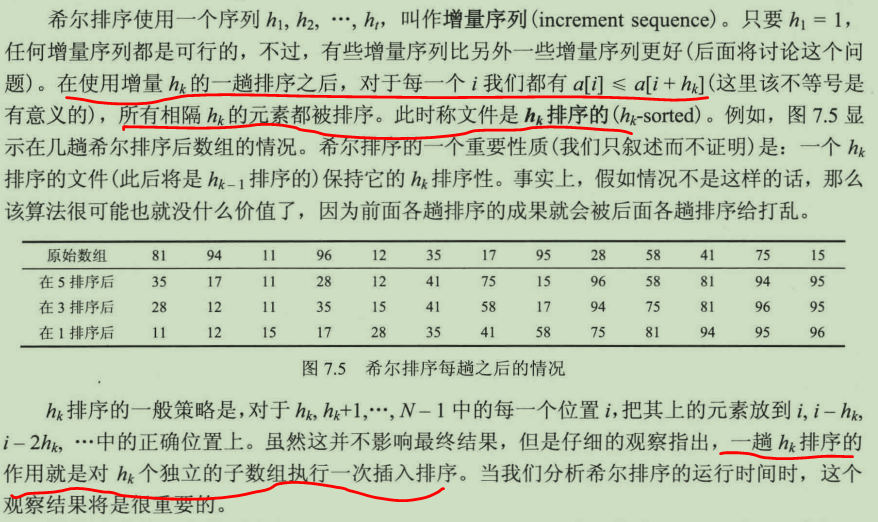
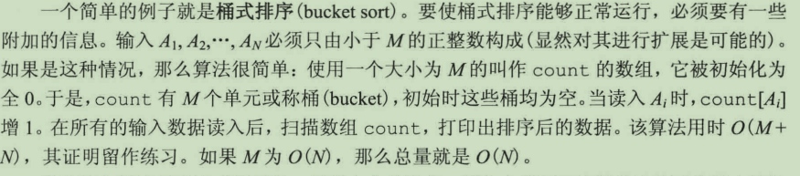
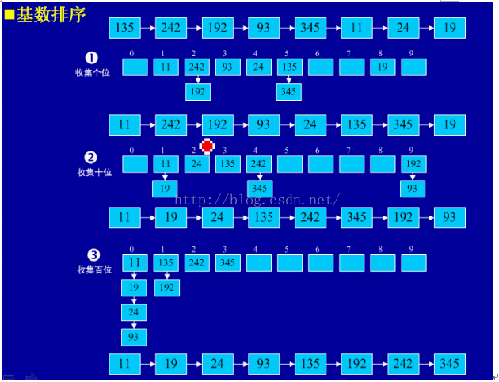
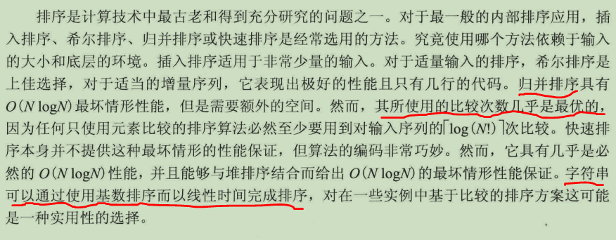

排序
稳定排序算法
保证在排序之前，2个相等的数其在序列的前后位置顺序和排序之后它们两个的前后位置顺序相同。简而言之，如果Ai = Aj，Ai原来在位置前，排序后Ai还是要在Aj位置前。
堆排序、快速排序、希尔排序、选择排序是不稳定的排序算法，而基数排序、冒泡排序、插入排序、归并排序是稳定的排序算法。
要排序的内容是一个复杂对象的多个数字属性，且其原本的初始顺序存在意义，那么我们需要在二次排序的基础上保持原有排序的意义，才需要使用到稳定性的算法
九种排序
- 1、选择排序
void selection_sort(std::vector<int>& vec){
for(int i=0;i<vec.size();i++){
int minIndex=i;
for(int j=i+1;j<vec.size();j++){
if(vec[j]<vec[minIndex])minIndex=j;
}
std::swap(vec[i], vec[minIndex]);
}
}
- 2、冒泡排序
void maopao_sort(std::vector<int>& vec){
for(int i=0;i<vec.size()-1;i++){
for(int j=0;j<vec.size()-1-i;j++){
if(vec[j]>vec[j+1])
std::swap(vec[j], vec[j+1]);
}
}
}
- 3、插入排序
void insertion_sort(std::vector<int>& vec){
for(int i=1;i<vec.size();i++){
int tmp=std::move(vec[i]);
int j=i;
for(;j>0&&vec[j-1]>tmp;--j){
vec[j]=std::move(vec[j-1]); //采用这种方式避免中间过程的相互交换
}
vec[j]=std::move(tmp);
}
}
//对数组范围内的元素进行插入排序
void inside_insertion_sort(std::vector<int>& vec, int left, int right){
for(int i=left+1;i<right+1;i++){
int tmp=std::move(vec[i]);
int j=i;
for(;j>=left+1&&vec[j-1]>tmp;--j){
vec[j]=std::move(vec[j-1]); //采用这种方式避免中间过程的相互交换
}
vec[j]=std::move(tmp);
}
}
// 对链表进行插入排序
ListNode* insertionSortList(ListNode* head) {
ListNode *dumpy = new ListNode(-1, head), *lastSorted=head, *cur = head->next;
while(cur){
if(lastSorted->val <= cur->val){
lastSorted = lastSorted->next;
}else{
ListNode *prev=dumpy;
while(prev->next->val <=cur->val){
prev=prev->next;
}
lastSorted->next = cur->next;
cur->next = prev->next;
prev->next = cur;
}
cur = lastSorted->next;
}
return dumpy->next;
}
简单排序算法的下界:
N个互异元素的数组其和自身逆序后数组，两个数组中存在的逆序对的数量和是C2N=N(N-1)/2，故N个互异元素的数组中存在的平均逆序对数是N(N-1)/4。
在简单排序算法中(上述三个)，交换一对逆序数，可以消除一对逆序，除此之外，算法中还有O(N)项工作，因此整个算法的时间为O(N+I)，I为逆序对的数量，可知，算法时间复杂度的下界为Ω(N+N(N-1)/4) = O(N^2)。
为了使得排序算法的复杂度降低到二次一下，就意味着每次交换删除不止一个逆序
- 4、希尔排序(缩减增量排序)  希尔排序中对于增量序列的选择十分重要，直接影响到时间复杂度。下面选择的增量序列为{N/2,(N/2)/2, ..., 1}(希尔增量)，其最坏时间复杂度依然为O(n2)，一些经过优化的增量序列如Hibbard经过复杂证明可使得最坏时间复杂度为O(N3/2)。
void shell_sort(std::vector<int>& vec){
for(int gap=vec.size()/2; gap>0;gap/=2){
for(int i=gap;i<vec.size();i++){
// 下面和插入排序过程相同，只不过交换的元素间隔为gap
int temp=std::move(vec[i]);
int j=i;
for(;j>=gap && temp<vec[j-gap];j-=gap){
vec[j] = std::move(vec[j-gap]);
}
vec[j]=std::move(temp);
}
}
}
- 5、堆排序
建立N个元素的二叉堆，花费O(N)时间；然后执行N次deleteMin操作，最小的元素离开堆(实际上是移动到存储堆的数组最后的位置)，则N次删除后，数组中元素按递减的顺序存储，每次删除耗时O(log N), 则算法耗时为O(N+Nlog N)=O(Nlog N).
如果构建的堆是最大堆，则最后得到的数组元素正好按增序存储。
# define leftchild(i) (2*i+1) //i位置的节点的左儿子下标，因为数组是从0开始存储的
template<typename comparable> // i:下滤位置，n: 堆的逻辑大小
void percDown(std::vector<comparable>& vec, int i, int n){
int child;
comparable tmp;
for(tmp=std::move(vec[i]); leftchild(i)<n;i=child){
child = leftchild(i);
if(child!=n-1 && vec[child]<vec[child+1])
child++;
if(tmp<vec[child])
vec[i]=std::move(vec[child]); //空穴下滤
else
break;
}
vec[i]=std::move(tmp);
}
void heap_sort(std::vector<int>& vec){
//构建最大堆
for(int i=vec.size()/2 - 1; i>=0; i--)// i<=len/2-1, 则其左孩子下标<=len-1, 等于说明i节点没有右孩子
percDown(vec, i, vec.size());
// 删除
for(int j=vec.size()-1;j>0;--j){
std::swap(vec[0], vec[j]);
percDown(vec, 0, j);
}
}
- 6、归并排序, 时间复杂度为O(Nlog N)
归并排序的比较次数是最少的，但其需要额外的内存来存储临时数组，并且耗费线性时间，在两者之间复制元素。
void merge(std::vector<int>& a, std::vector<int>& tmpArr, int leftPos, int rightPos, int rightEnd){
int leftEnd = rightPos-1;
int tmpPos=leftPos;
int numElements = rightEnd-leftPos+1;
while(leftPos<=leftEnd && rightPos<=rightEnd){
if(a[leftPos]<=a[rightPos])
tmpArr[tmpPos++]=std::move(a[leftPos++]);
else
tmpArr[tmpPos++] = std::move(a[rightPos++]);
}
while(leftPos<=leftEnd)
tmpArr[tmpPos++]=std::move(a[leftPos++]);
while(rightPos<=rightEnd)
tmpArr[tmpPos++]=std::move(a[rightPos++]);
//将排序后的临时数组复制回原数组
for(int i=0;i<numElements;++i, --rightEnd){
a[rightEnd] = std::move(tmpArr[rightEnd]);
}
}
void mergeSort(std::vector<int>& a, std::vector<int>& tmpArr, int left, int right){
if(left<right){
int mid=(left+right)/2;
mergeSort(a, tmpArr, left, mid);
mergeSort(a, tmpArr, mid+1, right);
merge(a, tmpArr, left, mid+1, right);
}
}
//简洁写法，推荐
void mergeSort2(vector<int>& nums, vector<int>& tmpArr, int left, int right){
if(left>=right)return;
int mid=(left+right)/2;
mergeSort(nums, tmpArr, left, mid);
mergeSort(nums, tmpArr, mid+1, right);
for(int p=left;p<=right;p++){
tmpArr[p]=nums[p];
}
int i=left, j=mid+1; //i,j分别是左右数组首元素的下标
for(int k=left; k<=right;k++){
if(j==right+1 || tmpArr[i]<=tmpArr[j]) nums[k]=std::move(tmpArr[i++]);
else nums[k]=std::move(tmpArr[j++]); // i==mid+1 || tmpArr[j]<tmpArr[i]
}
}
void merge_sort(std::vector<int>& a){
std::vector<int> tmpArr(a.size());
mergeSort(a, tmpArr, 0, a.size()-1);
}
- 7、快速排序, 时间复杂度O(Nlog N)
将第一个元素作为枢纽元，如果输入是随机的，那么是可以接受的，但如果输入是预排序的或者逆序的，那将产生一个劣质的分割，所有的元素都被划分到一个集合中； 随机选取枢纽元，是安全的，但是生成随机数会有额外的开销，会增加算法其余部分的平均运行时间。 枢纽元的最佳选择是数组的中值，但是无法提前获知的，因此可以采用三元中值法选取枢纽，即开始、中间、末尾三个元素的中值作为枢纽元来近似估计。
//快速排序 简易版
void simple_quick_sort(std::vector<int>& vec){
if(vec.size()>1){
std::vector<int> smaller, same, larger;
auto pivot = vec[vec.size()/2];
for(auto &v:vec){
if(v<pivot)smaller.push_back(v);
else if(v>pivot) larger.push_back(v);
else same.push_back(v);
}
simple_quick_sort(smaller);
simple_quick_sort(larger);
std::move(begin(smaller), end(smaller), begin(vec));
std::move(begin(same), end(same), begin(vec)+smaller.size());
std::move(begin(larger), end(larger), end(vec)-larger.size());
}
}
// 快速排序
void median3(std::vector<int>& a, int left, int right){
/*三数中值分割：消除输入数据预先排序的坏情形*/
int center = (left+right)/2;
//下面的顺序是固定的，不能随意调换顺序，先确保left位置上元素最小，再确保中间位置元素次小
if(a[center]<a[left])
std::swap(a[center], a[left]);
if(a[right] < a[left])
std::swap(a[right], a[left]);
if(a[right]<a[center])
std::swap(a[center], a[right]);
//将pivot置于right-1处
std::swap(a[center], a[right-1]);
}
//采用median3确定pivot
void _partition1(std::vector<int>& a, int left, int right){
if(left+2<=right){
median3(a, left, right);
const int pivot= a[right-1]; //经过三数中值分割后，选择倒数第二个数为pivot
//开始分割
int i=left, j=right-1;
for(;;){
while(a[++i]<pivot);
while(a[--j]>pivot);
if(i<j){
std::swap(a[i], a[j]); //此时i依旧在j左侧，a[i]>=pivot, a[j]<=pivot, 交换两者
}else break; // i已经移动到j右侧，跳出循环
}
//此时 pos<i的元素均小于等于pivot, pos>j的元素均大于等于pivot，
//i两侧的元素并非一定有序的，只是均小于等于或大于等于pivot
//再将pivot从位置right-1换到i, 再对i两侧的元素做递归调用
std::swap(a[i], a[right-1]);
_partition1(a, left, i-1);
_partition1(a, i+1, right);
}else{
//数组元素小于5， 采用插入排序
// inside_insertion_sort(a, left, right);
//数组元素等于2，直接判断两者
if(a[left]>a[right])
std::swap(a[left], a[right]);
}
}
//固定right位置上的元素为pivot
void _partition2(std::vector<int>& vec, int left, int right){
if(left>=right)return;
int pivot=vec[right];
int i=left, j=right;
while(i<j){
while(i<j && vec[i]<=pivot)i++;
while(i<j && vec[j]>=pivot)j--;
if(i<j){
swap(vec[i], vec[j]);
}
}
swap(vec[i], vec[right]);
_partition2(vec, left, i-1);
_partition2(vec, i+1, right);
}
void quick_sort(std::vector<int>& vec){
std::cout<<"median3:\n";
_partition1(vec, 0, vec.size()-1);
// std::cout<<"fix right:"
// _partition2(vec, 0, vec.size()-1);
}
线性时间排序
-
8、桶排序， 当需要排序的数范围过大时，将需要非常大的额外空间开销
 -
基数排序
对数字型或字符型的单关键字，可以看作由多个数位或多个字符构成的多关键，其中每个数字或字符可能的取值个数称为基数。例如0~999的数字，共有3位，每位上有10种可能。在按第k位排序时，落在同一个桶中的元素，是按照第k-1位排序的。
时间复杂度O(d*N), d代表最大元素的位数。 
针对正负混合的数据，需要分离成两个数组分别排序; 而且不适用浮点数排序，一般用作整数或者字符串排序(采用每个字符对应的ascii码)
//num代表vec中所有数字最大有几位
void inside_radix_sort(std::vector<int>& vec, int num){
std::vector<int>* buckets= new std::vector<int>[10];
for(int i=0;i<num;i++){
for(auto &v:vec){
int j=i;
auto copy=v;
int tmp;
while(j-- >= 0){
tmp=copy%10;
copy = (copy-tmp)/10;
}
tmp = tmp<0?-1*tmp:tmp; //第k位数， tmp取值范围0到9
buckets[tmp].push_back(v);
}
int k=0;
for(int p=0;p<10;p++){
for(auto& v:buckets[p]){
vec[k++]=v;
}
buckets[p].clear();
}
}
delete[] buckets;
}
void inside_radix_sort2(std::vector<int>& vec){
std::vector<int> odd; //奇数
std::vector<int> even; //偶数
for(int i=0;i<32;i++){ //将整数看成32位的二进制
for(auto &v:vec){
if((v>>i & 1)==0)
even.push_back(v);
else
odd.push_back(v);
}
int j=0;
for(auto& v:even)
vec[j++]=v;
for(auto& v:odd)
vec[j++]=v;
even.clear();
odd.clear();
}
}
/*binary:true, 代表将每个整数看成32位的二进制位，这样就无需计算最大元素的位数了;
radix_sort是主函数，将数组中的正负数分离
*/
void radix_sort(std::vector<int>& vec, bool binary=false){
std::vector<int> negative, positive;
int minNeg=0, maxPos=0;
for(auto& v:vec){
if(v<0){
minNeg=v<minNeg?v:minNeg;
negative.push_back(v);
}else{
maxPos=v>maxPos?v:maxPos;
positive.push_back(v);
}
}
int k=0;
if(!binary){
minNeg*=-1;
int numNeg=0, numPos=0;
while(minNeg){
minNeg/=10;
numNeg++;
}
while(maxPos){
maxPos/=10;
numPos++;
}
inside_radix_sort(negative, numNeg);
inside_radix_sort(positive, numPos);
for(int i=negative.size()-1; i>=0;i--){
vec[k++]=negative[i];
}
}else{
inside_radix_sort2(negative);
inside_radix_sort2(positive);
for(auto& v:negative)
vec[k++]=v;
}
for(auto& v:positive)
vec[k++]=v;
}
- 计数基数排序
基数排序的另一种实现，避免了使用额外的vector< vector< int > >来表示桶, 仅需要表示每个基数数量的count数组，和桶中元素在中间过程排序数组中的位置offset, 进一步优化，还可以同时用count来计算得到offset。
void inside_counting_radix_sort(std::vector<int>& vec, int num){
for(int i=0;i<num;i++){
int mod = 1, j=i;
while(j-->0)mod*=10;
// std::vector<int> count(10, 0), offset(10, 0);
// for(int k=0;k<vec.size();k++){
// int tmp=(vec[k]/mod)%10;
// tmp = tmp>=0?tmp:-1*tmp; //求第i位上数字为多少
// count[tmp]++;
// }
/*offset[k]代表第一个位数为k的元素在新数组中的位置pos，每次安排桶中一个元素后，让pos值自增，
这样桶中下一个元素的位置就会递增到下一位*/
// for(int m=1;m<10;m++)
// offset[m]=offset[m-1]+count[m-1];
// std::vector<int> copyVec=vec;
// for(int n=0;n<copyVec.size();n++){
// int bit = (copyVec[n]/mod)%10;
// bit=bit<0?-1*bit:bit;
// vec[offset[bit]++]=copyVec[n]; //offset[bit]++ 表示桶中下一个元素的位置向后移动一位
// }
/*通过复用count来避免offset, count[k+1]表示位数为k的个数，
从小到大扫描，coutn[k]+=count[k-1]， 得到的count前10位正好就是之前的offset*/
std::vector<int> count(11, 0);
for(int k=0;k<vec.size();k++){
int tmp=(vec[k]/mod)%10;
tmp = tmp>=0?tmp:-1*tmp; //求第i位上数字为多少
count[tmp+1]++;
}
for(int m=1;m<11;m++)
count[m]+=count[m-1];
std::vector<int> copyVec=vec;
for(int n=0;n<copyVec.size();n++){
int bit = (copyVec[n]/mod)%10;
bit=bit<0?-1*bit:bit;
vec[count[bit]++]=copyVec[n];
}
}
}
void count_radix_sort(std::vector<int>& vec){
std::vector<int> negative, positive;
int minNeg=0, maxPos=0;
for(auto& v:vec){
if(v<0){
minNeg=v<minNeg?v:minNeg;
negative.push_back(v);
}else{
maxPos=v>maxPos?v:maxPos;
positive.push_back(v);
}
}
minNeg*=-1;
int numNeg=0, numPos=0;
while(minNeg){
minNeg/=10;
numNeg++;
}
while(maxPos){
maxPos/=10;
numPos++;
}
inside_counting_radix_sort(negative, numNeg);
inside_counting_radix_sort(positive, numPos);
int k=0;
for(int i=negative.size()-1; i>=0;i--){
vec[k++]=negative[i];
}
for(auto& v:positive)
vec[k++]=v;
}
